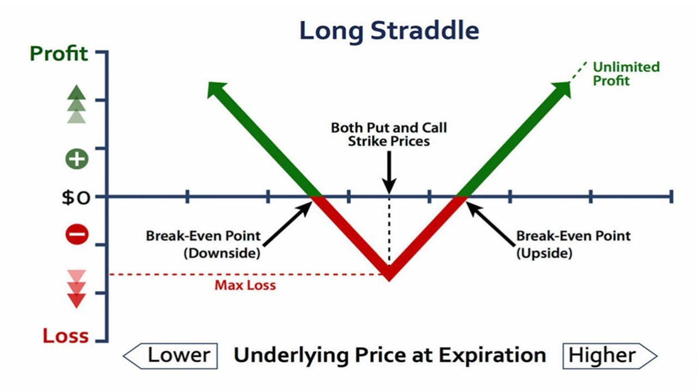
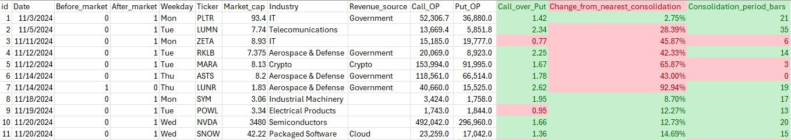
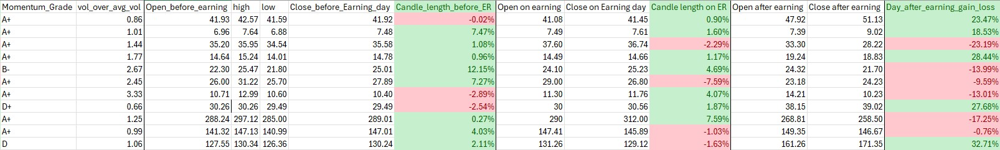
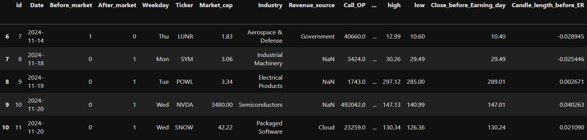

Introduction
It started like many trading days before—a quiet anticipation as I scrolled through earnings reports, scanning for opportunities. But this time, something clicked. Over the years, I’d noticed a recurring pattern: earnings announcements often sent stock prices soaring or tumbling. These fleeting moments held immense potential for profit.
Driven by curiosity, I asked myself: could machine learning—with its ability to uncover hidden patterns in data—help predict the magnitude of these price movements? Armed with a passion for data and a love for strategy, I set out to merge technology and trading. This blog captures my journey.
Folder and Environment Setup
Before jumping into the data, I made sure to set up an efficient and organized working environment. Here’s a simple setup to get you started:
- Place your Excel file and Jupyter Notebook in the same folder.
- For a complete project structure, I recommend this helpful guide.
Python Environment: Use a virtual environment to ensure consistency:
- Create a virtual environment using
conda env create --name <env name>.
- Activate the environment (
conda activate <env name>).
- Install the necessary packages, such as
pandas,numpy,scikit-learn,lightgbm,xgboost, andcatboost. - Note: you can find my environment.yml file in my github repo to set up a completely similar environment for this project.
Version Control: Use Git for version control to track changes in your project.
This setup ensures that your workflow is clean, reproducible, and scalable as the project evolves.
Collecting and Storing Data
Every story needs a foundation, and in this case, it’s data. To predict stock price movements, I needed to gather the right ingredients:
- Technical Patterns: Indicators like moving averages and resistance/support levels that reveal market trends.
- Sentiment Indicators: The put/call ratio, a barometer of market sentiment during earnings seasons.
- Historical Earnings Movements: Data on how stock prices reacted to past earnings announcements.
I compiled these features in an Excel file, structured for easy analysis. Remember to save your file in the same directory as your notebook.


Some of this data, like call/put options and momentum grades, may require a subscription. You can explore options data on Seeking Alpha or stock data on TradingView.
Input and Clean Data
Once my data was in place, the next step was to clean and prepare it for analysis. This is where the real magic happens:
- Importing Libraries
import pandas as pd
from sklearn.compose import ColumnTransformer
from sklearn.pipeline import Pipeline
from sklearn.preprocessing import OneHotEncoder, OrdinalEncoder
from sklearn.ensemble import GradientBoostingRegressor
from sklearn.model_selection import train_test_split- Importing Data: Using Python’s
pandaslibrary to read the Excel file into a structured format.
df = pd.read_excel('open interest.xlsx')
df.tail()
- Split Dataset to Train and Test set: This is to make sure there is no data leakage happening in the training process
train_df, test_df = train_test_split(df, test_size=0.1, random_state=123)
X_train = train_df.drop('Day_after_earning_gain_loss', axis = 1)
y_train = train_df['Day_after_earning_gain_loss']
X_test = test_df.drop('Day_after_earning_gain_loss', axis = 1)
y_test = test_df['Day_after_earning_gain_loss']- Preprocessing
- Drop Irrelevant Columns: Remove columns like
DateandTickerthat do not add value to the predictive model. - One-Hot Encoding: Convert categorical variables such as
Weekday,Industry, andRevenue_sourceinto numerical representations. - Ordinal Encoding: Transform ordinal features, such as
Momentum_Grade, based on a predefined category order. - Pass-through Features: Allow numerical columns that require no transformation to pass through unchanged.
Here’s a Python snippet illustrating the preprocessing pipeline:
drop_columns = ['Date', 'Ticker']
one_hot_columns = ['Weekday', 'Industry', 'Revenue_source']
ordinal_columns = ['Momentum_Grade']
pass_through_columns = list(set(X_train.columns) - set(drop_columns + one_hot_columns + ordinal_columns + ['Day_after_earning_gain_loss']))
preprocessor = ColumnTransformer(
transformers=[
('drop', 'drop', drop_columns),
('onehot', OneHotEncoder(handle_unknown='ignore'), one_hot_columns),
('ordinal', OrdinalEncoder(categories=[momentum_grade_order]), ordinal_columns),
('passthrough', 'passthrough', pass_through_columns)
]
)Data preparation might seem tedious, but it’s the unsung hero of any successful machine learning project. Without clean data, even the best algorithms can falter.
Training Models
With my data prepped, it was time to bring in the heavy hitters: LightGBM, XGBoost, and CatBoost. These ensemble models are like a dream team for structured financial data, each bringing unique strengths to the table.
- LightGBM: Lightning-fast and efficient for handling large datasets.
- XGBoost: Renowned for precision and adaptability.
- CatBoost: A natural choice for datasets with categorical variables.
However, with a limited dataset, I faced a tough decision: should I fine-tune the models or stick with their default settings? To avoid overfitting, I chose the latter, focusing on creating a balanced baseline instead. Here’s a snippet of how I trained the models:
from sklearn.ensemble import VotingRegressor
from lightgbm import LGBMRegressor
from xgboost import XGBRegressor
from catboost import CatBoostRegressor
lgbm = LGBMRegressor()
xgb = XGBRegressor(verbosity=0)
catboost = CatBoostRegressor(verbose=0)
ensemble_model = VotingRegressor(estimators=[
('lgbm', lgbm),
('xgb', xgb),
('catboost', catboost)
])
pipeline = Pipeline(steps=[
('preprocessor', preprocessor),
('regressor', ensemble_model)
])Making Predictions and Setting Up a Trade
pipeline.predict(X_test)The output is 0.055 and -0.03. This predicts one of the stock price movement after earning announcement is +5.5% and the other one’s is -3%. However, the actual movement of these stocks (which are PLTR and MARA) was +23.47% and -13.99%.
If you want to predict other stocks, just create a dataframe with the same format as your X_test and feed it to pipeline.predict().
Executing the Straddle Strategy: The predictions suggested small price movements, making the straddle strategy unsuitable for this scenario.
Conclusion
Looking back, this journey was as much about discovery as it was about trading. Here’s what I learned:
- Key Takeaways: Machine learning has immense potential in options trading, offering insights that were once hidden in the noise of the market.
- Limitations: My small dataset and lack of hyperparameter tuning left room for improvement. But every limitation is an invitation to grow.
- Potential: With more data and fine-tuning, this approach could become a game-changer for traders worldwide.
- Disclaimer: This analysis is educational and should not be considered financial advice.
Trading is as much an art as it is a science. By combining a tried-and-tested strategy with cutting-edge machine learning, I’ve uncovered a new way to approach the market. The question is: are you ready to explore it for yourself?
You can find my code and dataset here